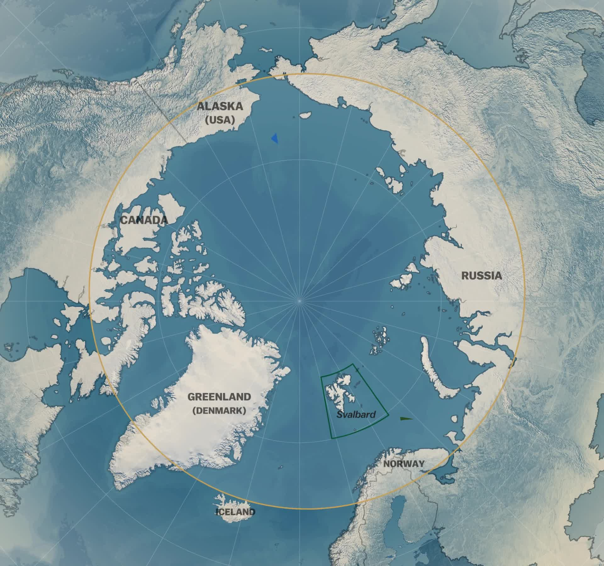

About the Arctic
The Arctic (/ˈɑːrktɪk/ or /ˈɑːrtɪk/) is a polar region located at the northernmost part of Earth. The Arctic consists of the Arctic Ocean, adjacent seas, and parts of Alaska (United States), Finland, Greenland (Denmark), Iceland, Northern Canada, Norway, Russia and Sweden. Land within the Arctic region has seasonally varying snow and ice cover, with predominantly treeless permafrost (permanently frozen underground ice)-containing tundra. Arctic seas contain seasonal sea ice in many places. The Arctic region is a unique area among Earth's ecosystems. For example, the cultures in the region and the Arctic indigenous peoples have adapted to its cold and extreme conditions. Life in the Arctic includes organisms living in the ice, zooplankton and phytoplankton, fish and marine mammals, birds, land animals, plants and human societies. Arctic land is bordered by the subarctic.
CONTINENT North America
SPECIES Polar bear, Arctic wolf, Arctic fox, Pacific salmon, Seals
Climate
The Arctic's climate is characterized by cold winters and cool summers. Its precipitation mostly comes in the form of snow and is low, with most of the area receiving less than 50 cm (20 in). High winds often stir up snow, creating the illusion of continuous snowfall. Average winter temperatures can go as low as −40 °C (−40 °F), and the coldest recorded temperature is approximately −68 °C (−90 °F). Coastal Arctic climates are moderated by oceanic influences, having generally warmer temperatures and heavier snowfalls than the colder and drier interior areas. The Arctic is affected by current global warming, leading to Arctic sea ice shrinkage, diminished ice in the Greenland ice sheet, and Arctic methane release as the permafrost thaws. Due to the poleward migration of the planet's isotherms (about 35 mi (56 km) per decade during the past 30 years as a consequence of global warming), the Arctic region (as defined by tree line and temperature) is currently shrinking.[9] Perhaps the most alarming result of this is Arctic sea ice shrinkage. There is a large variance in predictions of Arctic sea ice loss, with models showing near-complete to complete loss in September from 2040 to some time well beyond 2100. About half of the analyzed models show near-complete to complete sea ice loss in September by the year 2100.
Natural resources
The Arctic includes sizable natural resources (oil, gas, minerals, fresh water, fish and if the subarctic is included, forest) to which modern technology and the economic opening up of Russia have given significant new opportunities. The interest of the tourism industry is also on the increase. The Arctic contains some of the last and most extensive continuous wilderness areas in the world, and its significance in preserving biodiversity and genotypes is considerable. The increasing presence of humans fragments vital habitats. The Arctic is particularly susceptible to the abrasion of groundcover and to the disturbance of the rare breeding grounds of the animals that are characteristic to the region. The Arctic also holds 1/5 of the Earth's water supply.